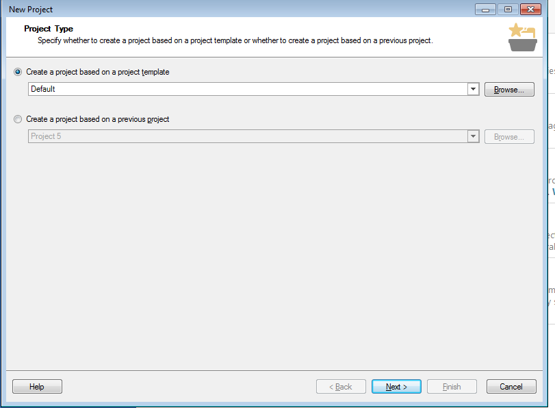
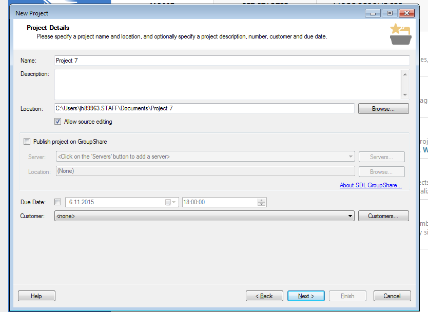

MVKS47 Käännösteknologian harjoituskurssi 2015 - 2016
09.11.2015: Word-tiedostot + johdatus projekteihin
Kurssin aikataulu
- pe 30.10. Trados käännöstyökaluna
- ma 2.11. Asennus + teoriaa muisteista
- pe 6.11 Käytännön harjoituksia muisteista
- ma 9.11. Word-tiedostot + johdatus projektiajatteluun
- pe 13.11 Projektien luominen ja käännöseditori
- ma 16.11. Muut tiedostomuodot / teoriaa
- pe 20.11 Muut tiedostomuodot / harjoituksia
- ma 23.11. Edistyneemmät editoritoiminnot
- pe 27.11 Ei tuntia
- ma 30.11. Tekstien kohdistus: teoriaa
- pe 4.12 Tekstien kohdistus: käytäntöä
- ma 7.12. Termipankit: teoriaa
- pe 11.12. Termipankit: käytäntöä
- ma 14.12. Harjoituksia
- pe 18.12. Q&A
Tänään
- Vielä nopeasti muisteista: luominen
- Word-tiedosto (doc/docx) Tradosin oletusmuotona
- Mistä word-tiedostot koostuvat
- Segmentit Tradosissa
- Dokumenttien rakenneosat
- Mitä ovat projektit?
- Projektien luomisen vaiheet
- Projektien asetukset
- Trados-kääntäjän workflow
- Projektimallit
1. Word-tiedoston osat
- Otsikot, otsikkotasot
- Kappale (vs. rivinvaihto)
- Listaelementit
- Taulukot, kuvat
- Muotoilut
2. Segmentointi Tradosissa
- Kappale vs. Lause + säännöt
- Yhdistäminen/jakaminen?
'You can only merge neighbor segments in the same paragraph.'
Trados ja projektit
1. Mistä Trados-projektit koostuvat?
Käännettävät tiedostot + kohdetiedostot
Käännösmuistit
- Käyttäjän muistit
- Projektikohtaiset muistit
Termitietokannat
Referenssitiedostot
Raportit
Projektin asetukset
Projektikansio levyllä

- Lähdekielen kansio
- Kohdekielen kansio
- Raportit
- JOS projektikohtainen TM
- Projektitiedosto

2. Projekti vs. yksittäinen tiedosto
- Joka tapauksessa teknisesti ottaen aina luodaan projekti
- Kansiorakenne
- Termitietokantojen yhdistäminen
- Valmiiden pohjien käyttäminen
- Deadlinet / vakioasiakkaat
- Pre-translate-toiminto
3. Projektin luomisen vaiheet
- Project Type
- Project Details
- Project Languages
- Project Files
- Translation memory and automated translation
- Termbases
- SDL Perfect Match
- Project preparation
- Batch processing settings
- Project summary
3.1. Project Type

- Valitse, käytätkö mallipohjaa
- Valitse, teetkö vanhan projektin pohjalta
- Oletus/aluksi: next
3.2. Project Details

- Projektin nimi
- Tallennuskansio
- Deadline
- Oletusasiakkaat
- Tärkeitä ainakin nimi ja kansio
3.3. Project Languages
- Mahdollisuus monelle kohdekielelle
- Oikea variantti
3.4. Project Files
- Yksi tai useampia tiedostoja kerralla
- Tiedostotyypin asetukset
3.5. Translation memory and automated translation
- Muistin luominen tai lisääminen
- Minimum match value
- Penalties
3.6. Termbases
- Lisättävät termitietokannat
- Palataan myöhemmin
3.7. SDL Perfect match
- Kaksikielisten referenssidokumenttien käyttäminen
- Harvoin käytetty toiminto
- Oletus: next
3.8. Project preparation
- Mitä Trados tekee, ennen kuin kääntäminen alkaa?
- Perfect Match voidaan usein poistaa
- Pre-Translate usein hyvä olla
3.9. Batch processing settings
- Säädä esim. Pre-translate-toiminnon asetukset
3.10. Project summary
- Ei valintoja, pelkkä tiivistelmä
4. Projektipaketit
- Sisältävät yhden projektin sisällön valmiiksi kerättynä ja luotuna
- Trados Freelance: vain vastaanottaminen
5. Trados-käännöksen workflow
1. Luodaan projekti
2. Käännetään
3. Verifioidaan ja tarkistetaan
4. Viimeistellään
5. Toimitetaan
6. Projektimallit
- Valmiiksi määritelty:
- kielet
- Muistikohtaiset asetukset
- minimum match value, pre-translation fuzzy border
- verifiointi
- Mitkä tehtävät Trados suorittaa ennen projektin valmistumista